Chapter 7 Creating a composite figure by subplotting
In this section, we will plot a composite figure. This refers to a type of plot that has many panels with common information, such as the same x- and y-axes. Subplotting is referred to when we allocate subsets of data to particular panels but not others in the composite figure. We will make each panel (i.e., subplot) one-by-one, combine them into a composite figure, add a common legend, and then annotate it with texts and shapes using the functions from smplot2 package.
First, you need to load data (.csv file). When you are loading your own .csv file for your data analysis, make sure you place the .csv file of your interest in the folder that has been set to the working directory.
In this example, we will be using data from this paper:
Seung Hyun Min, Alex S. Baldwin and Robert F. Hess. Ocular dominance plasticity: A binocular combination task finds no cumulative effect with repeated patching (2019). Vision Research, 161, 36-42.
We will be creating similar figures to those in the paper (ex. Figure 3A and Figure A2) using smplot. For the PDF copy, please visit this link.
library(tidyverse)
library(smplot2)
library(cowplot)df <- read_csv('https://www.smin95.com/min2019.csv')df$Day <- factor(df$Day)
head(df)## # A tibble: 6 x 4
## Subject Day Time Cbratio
## <chr> <fct> <dbl> <dbl>
## 1 S1 1 0 -0.421
## 2 S2 1 0 2.82
## 3 S3 1 0 1.69
## 4 S4 1 0 2.55
## 5 S5 1 0 -0.217
## 6 S6 1 0 0.626There are four columns in this data frame:
First,
Subjectrefers to each participant. There are 10 participants total.Next,
Dayrefers to the day of testing. The participants were tested on Day 1, 2, 3, 4 and 5. We will only use Day from 1 and 5.Timerefers to the number of minutes after an experimental manipulation (ex. monocular deprivation). These are 0, 3, 6, 12, 24 and 48 minutes, but in the data frame, it says 0, 1, 2, 3, 4 and 5; we will change the labels manually.The
Cbratiocolumn refers to the actual data that will be plotted here.
In the example below, the plots will have different colors based on Day (1 or 5). Therefore, the values in Day column have to be discrete, not continuous. To make them discrete, one needs to convert the Day column from double (continuous variable) to factor (discrete variable).
7.1 filter(), select() and summarise()
7.1.1 filter() for rows
To plot data of each subject separately, we need the data frame to show data only from one subject. This can be achieved as using filter():
filter(df, Subject == 'S1')## # A tibble: 12 x 4
## Subject Day Time Cbratio
## <chr> <fct> <dbl> <dbl>
## 1 S1 1 0 -0.421
## 2 S1 1 1 0.802
## 3 S1 1 2 1.01
## 4 S1 1 3 0.634
## 5 S1 1 4 -0.245
## 6 S1 1 5 -0.834
## 7 S1 5 0 2.42
## 8 S1 5 1 1.76
## 9 S1 5 2 1.91
## 10 S1 5 3 0.609
## 11 S1 5 4 0.811
## 12 S1 5 5 0.363- The first argument of
filter(),select(),summarise()andmutate()is a data frame. - The subsequent argument specifies how the data frame should be treated.
- The new printed result is a new data frame.
filter() is used to filter for rows that meet the requirement of your interest.
Here is another example.
filter(df, Day == 1)## # A tibble: 60 x 4
## Subject Day Time Cbratio
## <chr> <fct> <dbl> <dbl>
## 1 S1 1 0 -0.421
## 2 S2 1 0 2.82
## 3 S3 1 0 1.69
## 4 S4 1 0 2.55
## 5 S5 1 0 -0.217
## 6 S6 1 0 0.626
## 7 S7 1 0 2.62
## 8 S8 1 0 1.42
## 9 S9 1 0 1.54
## 10 S10 1 0 3.05
## # ... with 50 more rowsThe above code can be read as: filter for all rows of the data frame df that have 1 in the Day column.
Notice that S1 is a character because it has an alphabet. Therefore, it needs to be written as 'S1'. However, 1 of Day is double, which is essentially just a number digit. Therefore, it can be written as 1 with no quotation mark.
Let’s try another example.
day1 <- filter(df, Day == 1) # save the new data frame into a new variable
filter(day1, Subject == 'S1') # this new data frame contains Day 1 and Subject 1 data only.## # A tibble: 6 x 4
## Subject Day Time Cbratio
## <chr> <fct> <dbl> <dbl>
## 1 S1 1 0 -0.421
## 2 S1 1 1 0.802
## 3 S1 1 2 1.01
## 4 S1 1 3 0.634
## 5 S1 1 4 -0.245
## 6 S1 1 5 -0.834The above code can be read as: filter for all rows of the data frame df that have 1 in the Day column. Save this new data frame as day1. Then, filter for all rows of the data frame day1 that have S1 in the Subject column.
The above can also be written like the one below:
filter(df, Day == 1 & Subject == 'S1')## # A tibble: 6 x 4
## Subject Day Time Cbratio
## <chr> <fct> <dbl> <dbl>
## 1 S1 1 0 -0.421
## 2 S1 1 1 0.802
## 3 S1 1 2 1.01
## 4 S1 1 3 0.634
## 5 S1 1 4 -0.245
## 6 S1 1 5 -0.834The above can be read as: filter for all rows of the data frame df that have 1 in the Day column AND have S1 in the Subject column.
filter(df, Day == 1 | Subject == 'S1')## # A tibble: 66 x 4
## Subject Day Time Cbratio
## <chr> <fct> <dbl> <dbl>
## 1 S1 1 0 -0.421
## 2 S2 1 0 2.82
## 3 S3 1 0 1.69
## 4 S4 1 0 2.55
## 5 S5 1 0 -0.217
## 6 S6 1 0 0.626
## 7 S7 1 0 2.62
## 8 S8 1 0 1.42
## 9 S9 1 0 1.54
## 10 S10 1 0 3.05
## # ... with 56 more rowsThe above can be read as: filter for all rows of the data frame df that have 1 in the Day column OR have S1 in the Subject column. | represents OR, & represents AND.
7.1.2 select() for columns
If you wish to see the Cbratio column only (i.e., data only) for rows of df that have Day == 1 and Time == 0, you can write it like this:
day1_time0 <- filter(df, Day == 1 & Time == 0) # save the new data frame in the day1_time0 variable
select(day1_time0, Cbratio)## # A tibble: 10 x 1
## Cbratio
## <dbl>
## 1 -0.421
## 2 2.82
## 3 1.69
## 4 2.55
## 5 -0.217
## 6 0.626
## 7 2.62
## 8 1.42
## 9 1.54
## 10 3.05There are 10 rows (i.e., 10 subjects) in this filtered data frame and 1 column, which is Cbratio. The above can be read as: filter for all rows of the data frame df that have 1 in the Day column AND have 0 in the Time column. Then, store the new data frame in day1_time0. Then, select for Cbratio column from day1_time0.
select() is used to filter for columns that meet the requirement of your interest.
7.1.3 summarise() for grouped summaries
df contains individual data for all subjects on Days 1 and 5 across all time points. However, it does not contain average data either for each Day or Time.
summarise() can collapse multiple rows of observations into values such as the mean.
summarise(df, average = mean(Cbratio))## # A tibble: 1 x 1
## average
## <dbl>
## 1 1.35However, in this case, we get an example of Cbratio across Subject, Day and Time. This average value itself is not so meaningful. If we wish to obtain the average for each Day and Time, we can use the function group_by() to group data for each day and time.
As it was the case before, the first argument of
group_by()is a data frame.The second argument of
group_by()is the name of the column through which you would like to group the data.
by_day_time <- group_by(df, Day, Time)
print(by_day_time)## # A tibble: 120 x 4
## # Groups: Day, Time [12]
## Subject Day Time Cbratio
## <chr> <fct> <dbl> <dbl>
## 1 S1 1 0 -0.421
## 2 S2 1 0 2.82
## 3 S3 1 0 1.69
## 4 S4 1 0 2.55
## 5 S5 1 0 -0.217
## 6 S6 1 0 0.626
## 7 S7 1 0 2.62
## 8 S8 1 0 1.42
## 9 S9 1 0 1.54
## 10 S10 1 0 3.05
## # ... with 110 more rowsThe output of group_by() is a new data frame (it might appear exactly the same as before, ex. df). However, it will respond differently to summarise() because the rows of the data frame are now grouped based on day and time, as we have specified.
summarise(by_day_time, Average_Cbratio = mean(Cbratio))## `summarise()` has grouped output by 'Day'. You can override using the
## `.groups` argument.## # A tibble: 12 x 3
## # Groups: Day [2]
## Day Time Average_Cbratio
## <fct> <dbl> <dbl>
## 1 1 0 1.57
## 2 1 1 2.21
## 3 1 2 2.32
## 4 1 3 0.979
## 5 1 4 1.25
## 6 1 5 1.14
## 7 5 0 1.85
## 8 5 1 1.49
## 9 5 2 1.02
## 10 5 3 1.15
## 11 5 4 0.759
## 12 5 5 0.452This new data frame yields average for each Day and Time. We have now created a new column Average_Cbratio which stores all the average data of Cbratio.
Therefore, group_by() and summarise() are very useful together. They provide grouped summaries, such as the average. However, summarise() alone may not be so useful. group_by() alone is also rarely used.
Besides the average, one might also be interested in obtaining either standard deviation or standard error.
However, our df does not contain any data about the standard deviation or standard error per Day or Time, etc. Standard deviation can be calculated via sd() and standard error can be computed with sm_stdErr().
Below, we obtain standard error with the help of the summarise() function for each Day and Time.
summarise(df, standard_error = sm_stdErr(Cbratio))## # A tibble: 1 x 1
## standard_error
## <dbl>
## 1 0.115As we have seen before, we see that standard_error has been calculated across all subjects, day and time. This is not so useful. We should use summarise() with group_by() so that each standard error could be for each Day and Time.
by_day_time <- group_by(df, Day, Time)
summarise(by_day_time, standard_error = sm_stdErr(Cbratio))## `summarise()` has grouped output by 'Day'. You can override using the
## `.groups` argument.## # A tibble: 12 x 3
## # Groups: Day [2]
## Day Time standard_error
## <fct> <dbl> <dbl>
## 1 1 0 0.393
## 2 1 1 0.363
## 3 1 2 0.400
## 4 1 3 0.352
## 5 1 4 0.266
## 6 1 5 0.438
## 7 5 0 0.563
## 8 5 1 0.422
## 9 5 2 0.462
## 10 5 3 0.224
## 11 5 4 0.292
## 12 5 5 0.193This standard error is for each Day and Time across all subjects.
Now let’s obtain the mean and standard error of Cbratio for each Day and Time across all subjects using the data frame that has been grouped by Day and Time via group_by().
by_day_time1 <- summarise(by_day_time, Average = mean(Cbratio),
StdError = sm_stdErr(Cbratio))## `summarise()` has grouped output by 'Day'. You can override using the
## `.groups` argument.print(by_day_time1)## # A tibble: 12 x 4
## # Groups: Day [2]
## Day Time Average StdError
## <fct> <dbl> <dbl> <dbl>
## 1 1 0 1.57 0.393
## 2 1 1 2.21 0.363
## 3 1 2 2.32 0.400
## 4 1 3 0.979 0.352
## 5 1 4 1.25 0.266
## 6 1 5 1.14 0.438
## 7 5 0 1.85 0.563
## 8 5 1 1.49 0.422
## 9 5 2 1.02 0.462
## 10 5 3 1.15 0.224
## 11 5 4 0.759 0.292
## 12 5 5 0.452 0.193The original df, which contains data for each subject, has now been transformed to a new data frame that contains grouped summaries, such as group averages and standard errors.
If you are interested in learning more about this topic (data transformation), please check out Chapter 5 of R for Data Science by Hadley Wickham (https://r4ds.had.co.nz/transform.html).
7.2 Plotting the averaged data with error bars
Plotting the averaged data can be done with a data frame that contains individual observation (ex. each subject, condition, etc). This data frame can be modified to only contain summary values, such as mean and standard error, using group_by() and summarise() together as shown above.
We will plot a similar graph to Figure 3A in the Vision Research paper (Min et al., 2019) in this section.
- A data frame that has grouped summary information (
group_by()andsummarise()), such as average and standard error across subject, is needed to plot a graph that shows the average data with error bars. geom_errorbar()is required to plot the error bar of the sample.- Legend title has been removed with the
theme()function. - Greek letter Delta is printed with
\u0394. - X-tick labels are originally 0, 1, 2, 3, 4, 5 (as specified in the df data frame). However, they can be manually changed using
labels =argument in thescale_x_continuous()function. - Legend label can also be changed in
labels =from thescale_color_manual()function because eachDayhas been defined by eachcolor; this is the case becausecolor = Dayinaes(..., ..., color = Day).
ggplot(data = by_day_time1, aes(x = Time, y = Average, color = Day)) +
geom_point(size = 4.5) +
geom_errorbar(aes(ymin = Average - StdError, ymax = Average + StdError), size = .5, width = .05) +
geom_smooth(method = 'lm', se = F, size = 0.9) +
# lm = linear regression method
scale_x_continuous(breaks = unique(df$Time),
labels = c("0", "3", "6", "12", "24", "48")) +
sm_hgrid(legends = TRUE) +
scale_color_manual(values = sm_color('blue','orange'),
labels = c("Day 1", "Day 5")) +
ggtitle("Recovery of the patching effect") +
xlab("Time after monocular deprivation (min)") +
ylab("\u0394 Contrast balance ratio (dB)") +
theme(legend.justification = c(1,0),
legend.position = c(0.96, 0.67),
legend.title = element_blank()) ## `geom_smooth()` using formula = 'y ~ x'
7.3 Plotting individual data
In this section, we will plot a similar graph to Figure A2 in the Vision Research paper (Min et al., 2019).
First, you will need several packages for this section.
- If you do not have the gridExtra and grid packages in your RStudio, please install them using the codes below. It might take less than a minute.
install.packages('gridExtra')
install.packages('grid')- Then load all these packages below.
library(tidyverse)
library(cowplot)
library(smplot2)
library(gridExtra)
library(grid)Now let’s plot data for each subject (S1-S9) except S10. Each panel shows the data of each subject for both Days 1 and 5.
df_s1 <- filter(df, Subject == 'S1')
# rows of df that only contain S1 in the Subject column
# use df_s1 to plot the data of S1
plot_s1 <- ggplot(data = df_s1, aes(x = Time, y = Cbratio, color = Day)) +
geom_point(size = 4.5) +
geom_smooth(method = 'lm', se = F, size = 0.9) +
# lm = linear regression method
scale_x_continuous(breaks = unique(df$Time),
labels = c("0", "3", "6", "12", "24", "48")) +
sm_hgrid() +
scale_color_manual(values = sm_color('blue','orange')) +
scale_y_continuous(limits = c(-3, 5.5))
# axis text size is 1.5x the original font size.
print(plot_s1)## `geom_smooth()` using formula = 'y ~ x'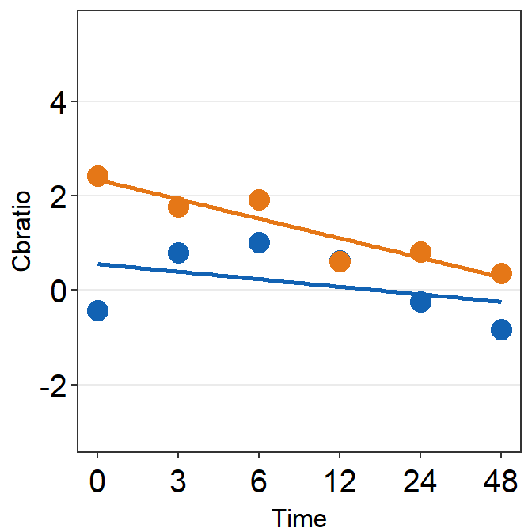
Then make each one for the other subjects (S2-S9).
df_s2 <- filter(df, Subject == 'S2')
plot_s2 <- ggplot(data = df_s2, aes(x = Time, y = Cbratio, color = Day)) +
geom_point(size = 4.5) +
geom_smooth(method = 'lm', se = F, size = 0.9) +
# lm = linear regression method
scale_x_continuous(breaks = unique(df$Time),
labels = c("0", "3", "6", "12", "24", "48")) +
sm_hgrid() +
scale_color_manual(values = sm_color('blue','orange')) +
scale_y_continuous(limits = c(-3, 5.5))
# axis text size is 1.5x the original font size.
print(plot_s2)## `geom_smooth()` using formula = 'y ~ x'df_s3 <- filter(df, Subject == 'S3')
plot_s3 <- ggplot(data = df_s3, aes(x = Time, y = Cbratio, color = Day)) +
geom_point(size = 4.5) +
geom_smooth(method = 'lm', se = F, size = 0.9) +
# lm = linear regression method
scale_x_continuous(breaks = unique(df$Time),
labels = c("0", "3", "6", "12", "24", "48")) +
sm_hgrid() +
scale_color_manual(values = sm_color('blue','orange')) +
scale_y_continuous(limits = c(-3, 5.5))
# axis text size is 1.5x the original font size.
print(plot_s3)## `geom_smooth()` using formula = 'y ~ x'df_s4 <- filter(df, Subject == 'S4')
plot_s4 <- ggplot(data = df_s4, aes(x = Time, y = Cbratio, color = Day)) +
geom_point(size = 4.5) +
geom_smooth(method = 'lm', se = F, size = 0.9) +
# lm = linear regression method
scale_x_continuous(breaks = unique(df$Time),
labels = c("0", "3", "6", "12", "24", "48")) +
sm_hgrid() +
scale_color_manual(values = sm_color('blue','orange')) +
scale_y_continuous(limits = c(-3, 5.5))
# axis text size is 1.5x the original font size.
print(plot_s4)## `geom_smooth()` using formula = 'y ~ x'
# Subject 5
df_s5 <- filter(df, Subject == 'S5')
# rows of df that only contain S5 in the Subject column
plot_s5 <- ggplot(data = df_s5, aes(x = Time, y = Cbratio, color = Day)) +
geom_point(size = 4.5) +
geom_smooth(method = 'lm', se = F, size = 0.9) +
# lm = linear regression method
scale_x_continuous(breaks = unique(df$Time),
labels = c("0", "3", "6", "12", "24", "48")) +
sm_hgrid(legends = FALSE) +
scale_color_manual(values = sm_color('blue','orange')) +
scale_y_continuous(limits = c(-3, 5.5))
print(plot_s5)## `geom_smooth()` using formula = 'y ~ x'
# Subject 6
df_s6 <- filter(df, Subject == 'S6')
# rows of df that only contain S6 in the Subject column
plot_s6 <- ggplot(data = df_s5, aes(x = Time, y = Cbratio, color = Day)) +
geom_point(size = 4.5) +
geom_smooth(method = 'lm', se = F, size = 0.9) +
# lm = linear regression method
scale_x_continuous(breaks = unique(df$Time),
labels = c("0", "3", "6", "12", "24", "48")) +
sm_hgrid() +
scale_color_manual(values = sm_color('blue','orange')) +
scale_y_continuous(limits = c(-3, 5.5))
# axis text size is 1.5x the original font size.
print(plot_s6)## `geom_smooth()` using formula = 'y ~ x'
df_s7 <- filter(df, Subject == 'S7')
plot_s7 <- ggplot(data = df_s7, aes(x = Time, y = Cbratio, color = Day)) +
geom_point(size = 4.5) +
geom_smooth(method = 'lm', se = F, size = 0.9) +
# lm = linear regression method
scale_x_continuous(breaks = unique(df$Time),
labels = c("0", "3", "6", "12", "24", "48")) +
sm_hgrid() +
scale_color_manual(values = sm_color('blue','orange')) +
scale_y_continuous(limits = c(-3, 5.5))
# axis text size is 1.5x the original font size.
print(plot_s7)## `geom_smooth()` using formula = 'y ~ x'
df_s8 <- filter(df, Subject == 'S8')
plot_s8 <- ggplot(data = df_s8, aes(x = Time, y = Cbratio, color = Day)) +
geom_point(size = 4.5) +
geom_smooth(method = 'lm', se = F, size = 0.9) +
# lm = linear regression method
scale_x_continuous(breaks = unique(df$Time),
labels = c("0", "3", "6", "12", "24", "48")) +
sm_hgrid() +
scale_color_manual(values = sm_color('blue','orange')) +
scale_y_continuous(limits = c(-3, 5.5))
# axis text size is 1.5x the original font size.
print(plot_s8)## `geom_smooth()` using formula = 'y ~ x'
# Subject 9
df_s9 <- filter(df, Subject == 'S9')
plot_s9 <- ggplot(data = df_s9, aes(x = Time, y = Cbratio, color = Day)) +
geom_point(size = 4.5) +
geom_smooth(method = 'lm', se = F, size = 0.9) +
# lm = linear regression method
scale_x_continuous(breaks = unique(df$Time),
labels = c("0", "3", "6", "12", "24", "48")) +
sm_hgrid() +
scale_color_manual(values = sm_color('blue','orange')) +
scale_y_continuous(limits = c(-3, 5.5))
# axis text size is 1.5x the original font size.
print(plot_s9)## `geom_smooth()` using formula = 'y ~ x'
7.4 Putting multiple plots together (a composite figure)
Each panel output has to be stored in a list using the function list(). X-axis label can be specified using sm_common_xlabel(), which has x and y arguments for setting the location of the label. Y-axis label is specified using sm_common_ylabel() with the same x and y arguments. The title can be set using sm_common_title().
all_plots <- list(plot_s1, plot_s2, plot_s3,
plot_s4, plot_s5, plot_s6,
plot_s7, plot_s8, plot_s9)
xlabel <- sm_common_xlabel('Minutes after monocular deprivation', x= 0.52, y = 0.6)
ylabel <- sm_common_ylabel('\u0394 Contrast balance ratio (dB)')
title <- sm_common_title('Individual data', y = 0.2)
plots_tgd <- sm_put_together(all_plots, title, xlabel,ylabel,
ncol=3,nrow=3, hmargin=-5, wmargin=-5)## `geom_smooth()` using formula = 'y ~ x'
## `geom_smooth()` using formula = 'y ~ x'
## `geom_smooth()` using formula = 'y ~ x'
## `geom_smooth()` using formula = 'y ~ x'
## `geom_smooth()` using formula = 'y ~ x'
## `geom_smooth()` using formula = 'y ~ x'
## `geom_smooth()` using formula = 'y ~ x'
## `geom_smooth()` using formula = 'y ~ x'
## `geom_smooth()` using formula = 'y ~ x'Now let’s put them together in a 3x3 figure (3 rows, 3 columns) using the function sm_put_together(). So, ncol and nrow are set to 3 in sm_put_together(). The function automatically removes tick labels in both x- and y-axes in inner panels, and keeps them on the outer panels, so that combined plot looks clean. Also, the hmargin argument can be set to adjust the blank space of height between panels; the wmargin argument can be set to adjust the blank space of width between panels. Their values can be both negative (less blank space) and positive (more blank space). I suggest you use values from -5 to 5 for hmargin and wmargin. wRatio is an argument for sm_put_together() that controls the relative width of the left-most column to that of other columns; the default value is set to 1.1 because left-most panels have y-axis ticks. Conversely, hRatio is an argument for sm_put_together() that controls the relative height of the bottom row to that of higher rows. It is set to 1.1 as default because bottom row panels have x-ticks. I encourage users to modify these values because different computer systems can show slightly different figure outputs.
Figure 7.1: 3x3 figure. It has 3 columns and 3 rows
save_plot('together1.png',plots_tgd,ncol=3,nrow=3,
base_height=3.4,base_width=3)When you are saving the graph as an image file, nrow and ncol in save_plot() have to match the values in sm_put_together() as shown above. save_plot(), which is a function from the cowplot package, is a function that saves a selected graph into an image or PDF file (or eps, etc).
Open together1.png in your directory folder. The figure is clean but it lacks a few things: 1) label for each panel, 2) legend. With examples below, we will add them.
all_plots2 <- sm_panel_label(all_plots, x = 0.1, y = 0.9, panel_tag ='1', panel_pretag = 'S', text_size = 5,
text_color = 'black', fontface='bold')## `geom_smooth()` using formula = 'y ~ x'
## `geom_smooth()` using formula = 'y ~ x'
## `geom_smooth()` using formula = 'y ~ x'
## `geom_smooth()` using formula = 'y ~ x'
## `geom_smooth()` using formula = 'y ~ x'
## `geom_smooth()` using formula = 'y ~ x'
## `geom_smooth()` using formula = 'y ~ x'
## `geom_smooth()` using formula = 'y ~ x'
## `geom_smooth()` using formula = 'y ~ x'
## `geom_smooth()` using formula = 'y ~ x'
## `geom_smooth()` using formula = 'y ~ x'
## `geom_smooth()` using formula = 'y ~ x'
## `geom_smooth()` using formula = 'y ~ x'
## `geom_smooth()` using formula = 'y ~ x'
## `geom_smooth()` using formula = 'y ~ x'
## `geom_smooth()` using formula = 'y ~ x'
## `geom_smooth()` using formula = 'y ~ x'
## `geom_smooth()` using formula = 'y ~ x'Here, we include a label for each panel, which represents the data of each subject, using sm_panel_label().
The function sm_panel_label() has a few arguments. x and y determine the location of the panel label; 0.5 represents its origin in the middle of the panel. panel_tag determines the character string that will be used for enumeration. In this example, panel_tag = "1" is chosen so there will be a sequence of numbers. Other options include: 1) panel_tag = "A" for uppercase letters, 2) panel_tag = "a" for small case letters, 3) panel_tag = "I" for upper roman numerals, and 4) panel_tag = "i" for lower roman numerals. There are also tag labels that can set to be consistent across panels: these are panel_pretag and panel_posttag. panel_pretag comes before panel_tag (as shown in this example, in the form of S, ex. S1), and panel_posttag comes after panel_tag.
plots_tgd2 <- sm_put_together(all_plots2, title, xlabel,ylabel,
ncol=3,nrow=3, hmargin=-5, wmargin=-5)## `geom_smooth()` using formula = 'y ~ x'
## `geom_smooth()` using formula = 'y ~ x'
## `geom_smooth()` using formula = 'y ~ x'
## `geom_smooth()` using formula = 'y ~ x'
## `geom_smooth()` using formula = 'y ~ x'
## `geom_smooth()` using formula = 'y ~ x'
## `geom_smooth()` using formula = 'y ~ x'
## `geom_smooth()` using formula = 'y ~ x'
## `geom_smooth()` using formula = 'y ~ x'plots_tgd3 <- sm_add_legend(plots_tgd2, x = .88, y= 0.05, sampleplot = all_plots2[[1]],
direction = 'horizontal', border = FALSE)## `geom_smooth()` using formula = 'y ~ x'As before, we then combine the list of plots with panel label (all_plots2) and the labels for the common x- and y-axes, as well as the title of the combined figure using sm_put_together(). The arguments of sm_put_together() have to be written in this order unless they are specified (ex. sm_put_together(all_plots=all_plots, xlabel=xlabel, title=title)). We reduce the margin of width and height blank space between panels by setting hmargin=-5 and vmargin=-5.
Next, we add legend using sm_add_legend(). It has a number of arguments. First, the combined figure (output from sm_put_together()) must be provided. Next, x and y are the location of the legend in the coordinates of the combined figure (0 to 1), where x=0.5 and y=0.5 represents the center of the combined figure. sampleplot has to be provided, which in this case one of the plots in the plots_tgd2 list, so that the function sm_add_legend() can derive a legend for the whole combined plot. The direction (or orientation) of the legend can also be set as horizontal or vertical; in this case, we set it to direction = horizontal.
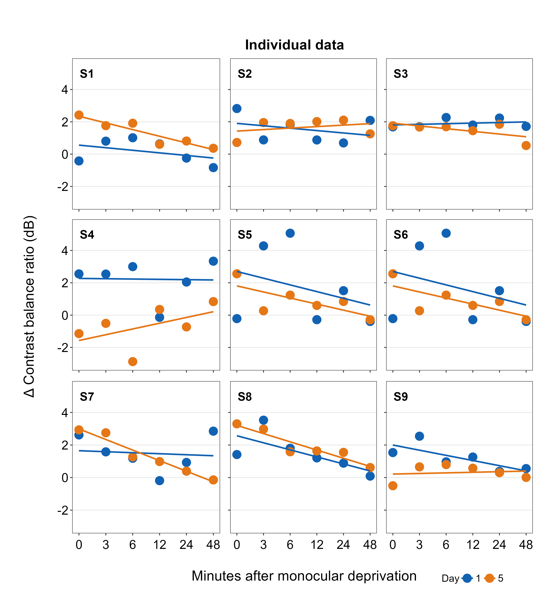
The border of the legend can also be included by setting border = TRUE. We can also increase the amount of spacing within the legend using legend_spacing argument from sm_add_legend. This change is subtle but you will definitely notice it.
plots_tgd3b <- sm_add_legend(plots_tgd2, x = .88, y= 0.05, sampleplot = all_plots2[[1]],
direction = 'horizontal', border = TRUE, legend_spacing = 1)## `geom_smooth()` using formula = 'y ~ x'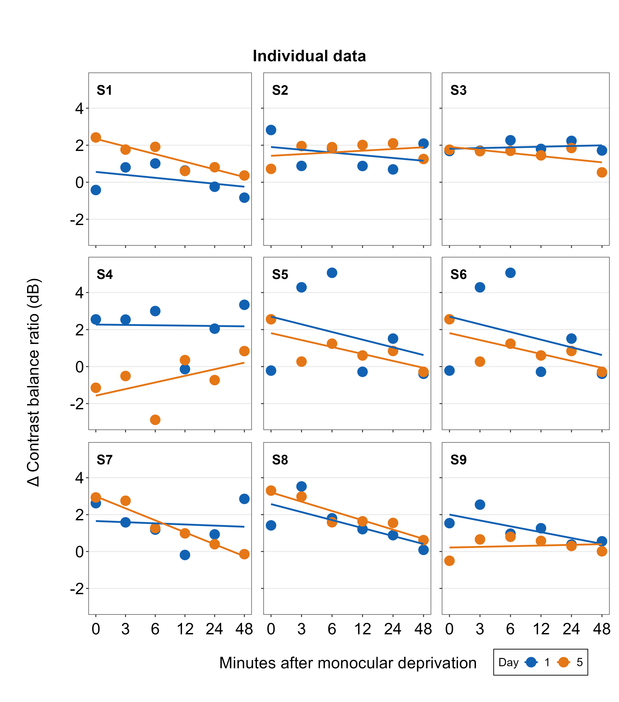
You can even make a separate legend on your own with full customization using sm_common_legend(), then add the legend to the combined plot using sm_add_legend(). We will do this by first making a combined figure with two rows and five columns (nrow=2 and ncol=5). The legend can be on the 10th panel because its empty.
legend <- ggplot(data = df_s9, aes(x = Time, y = Cbratio, color = Day)) +
geom_point(size = 2.5) +
scale_color_manual(values = sm_color('blue','orange'),
labels = c('Data from Day 1 ', 'Data from Day 5 ')) +
scale_shape_manual(values = c(21,22),
labels = c('Data from Day 1 ', 'Data from Day 5 ')) +
sm_common_legend(x = 0.5, y = 0.1 , title=FALSE, legend_spacing = 1)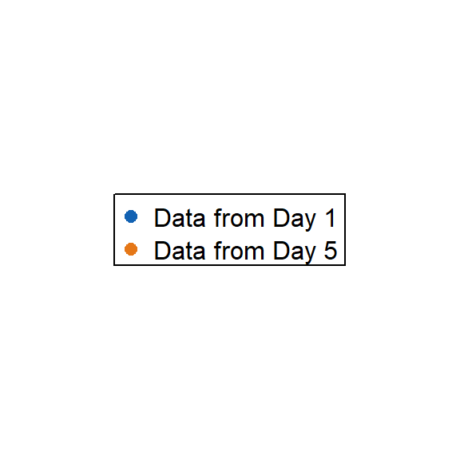
Here, in sm_common_legend(), x and y control the location of the legend. Basically, legend is a new plot with no points; however, you still need to draw the same points and include other features from other sub-panels to make sure that they are included in the legend. Notice that legend labels have been customized as well by adjusting the labels within scale_color_manual() and scale_shape_manual(). The title has been removed by setting title = FALSE.
Let’s see what happens if you change the location (x and y) of the legend.
legend_a <- ggplot(data = df_s9, aes(x = Time, y = Cbratio, color = Day)) +
geom_point(size = 2.5) +
scale_color_manual(values = sm_color('blue','orange'),
labels = c('Data from Day 1 ', 'Data from Day 5 ')) +
scale_shape_manual(values = c(21,22),
labels = c('Data from Day 1 ', 'Data from Day 5 ')) +
sm_common_legend(x = 0.5, y = 0.5 , title=FALSE, legend_spacing = 1)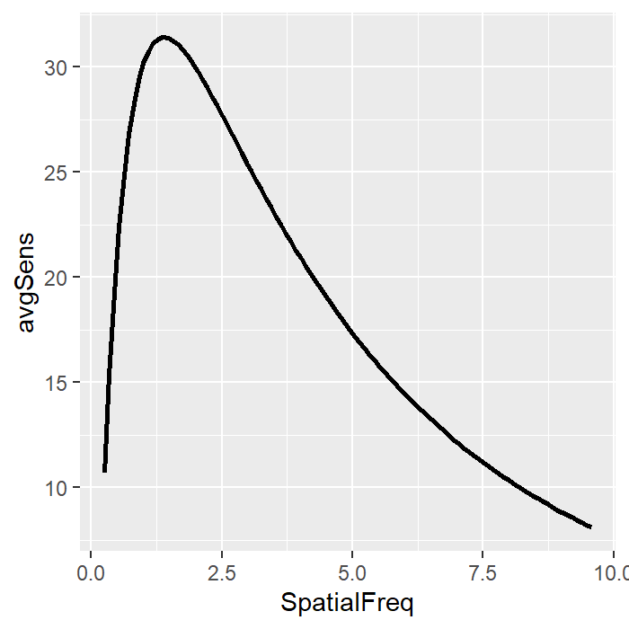
Notice that the relative orientation of the legend has shifted. The legend can then be added to the combined plot using sm_add_legend(). If you provide a separate legend, then other arguments of the function will be ignored, such as direction and border from sm_add_legend() because these arguments are used to derive a legend based on sampleplot.
plots_tgd3c <- sm_add_legend(plots_tgd2, x = .91, y= 0.05, legend=legend_a)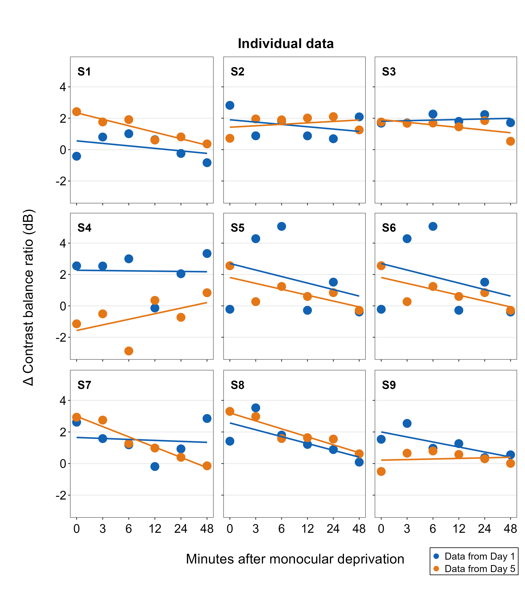
Also, besides sm_add_legend(), sm_put_together() can also legend onto the combined plot. The legend however has to be separately made using sm_common_legend() first, ex. sm_put_together(legend = legend), where legend is a separate legend created as shown above. If the legend is provided in sm_put_together(), the function will automatically add legend onto the last panel of the combined plot, so make sure that the last empty panel is empty.
To demonstrate this function, we will make a combined figure with 2 rows and 5 columns.
xlabel <- sm_common_xlabel('Minutes after monocular deprivation', x=0.51, y = 0.6)
ylabel <- sm_common_ylabel('\u0394 Contrast balance ratio (dB)', x=0.7)
title <- sm_common_title('Individual data', y = 0.3, x = 0.51, size=18)
plots_tgd4 <- sm_put_together(all_plots, title=title, xlabel=xlabel,
ylabel=ylabel, legend=legend_a,
ncol=5,nrow=2, hmargin=-5, wmargin=-5)## `geom_smooth()` using formula = 'y ~ x'
## `geom_smooth()` using formula = 'y ~ x'
## `geom_smooth()` using formula = 'y ~ x'
## `geom_smooth()` using formula = 'y ~ x'
## `geom_smooth()` using formula = 'y ~ x'
## `geom_smooth()` using formula = 'y ~ x'
## `geom_smooth()` using formula = 'y ~ x'
## `geom_smooth()` using formula = 'y ~ x'
## `geom_smooth()` using formula = 'y ~ x'save_plot('together4.png', plots_tgd4, ncol=5, nrow=2,
base_height=3.4, base_width=3)The legend is set using the function sm_common_legend(), whose x and y control the location of the legend. Basically, legend is a new plot with no points; however, you still need to draw the same points and include other features from other sub-panels to make sure that they are included in the legend. THe output legend then gets handled by sm_put_together().
The arguments of sm_put_together() have to be written in this order unless they are specified (ex. sm_put_together(all_plots=all_plots, xlabel=xlabel, title=title)).
If the legend is included in sm_put_together, the function will automatically add legend onto the last panel of the combined plot, so make sure that the last empty panel is empty. To move the legend’s location, you need to adjust x and y of sm_common_legend(), which you have used to make a separate, customisable legend.

7.5 Adding annotations to the composite figure
smplot2 offers multiple options for users to add annotations on the final, combined figure with a full flexibility. Here are some examples. These functions all have the form of sm_add_*().
7.5.1 Text annotations
Text annotations can be added to the composite figure using sm_add_text(). The label argument can be used to specify the text label. x and y are the coordinate values of the text in the composite figure, and they have to be between 0 and 1; 0.5 represents the origin (center) of the composite figure. size determines the text size and the fontface can be either bold, plain, italic or italic.bold.
plots_tgd4b <- sm_add_text(plots_tgd4, label = 'My composite figure',
x = 0.185, y = 0.19, size = 14, fontface='bold')
7.5.2 Point annotations
Point annotations can be added to the composite figure using sm_add_point(). x and y are the coordinate values of the point in the composite figure, and they have to be between 0 and 1; 0.5 represents the origin (center) of the composite figure. size determines the point size and the shape number input should be the same as the ones in ggplot2 (ex. 21 is circle with border). fill should be provided for shapes with border. If the shape has no border, then color is sufficient to set the color that fills the point.
plots_tgd4c <- sm_add_point(plots_tgd4b,x = 0.50, y = 0.50, size = 35,
shape = 21, fill = 'gray80', color = 'black')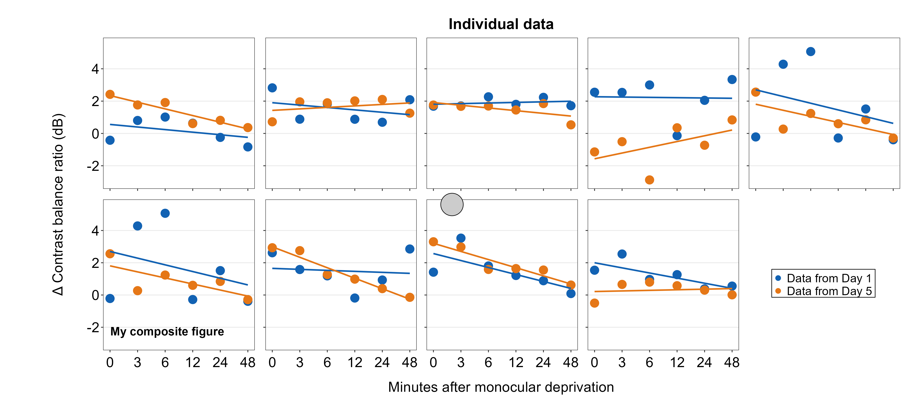
7.5.3 Line annotations
Line annotations can be added to the composite figure using sm_add_line(). x and y are the starting coordinate values of the line in the composite figure. xend and yend are the ending coordinate values of the line. These coordinate values have to be between 0 and 1; 0.5 represents the origin (center) of the composite figure. linewidth determines the width of the line and the color should adjust the color of the line. There is no fill argument. These have same arguments as annotate(), which is a ggplot2 function.
We will draw a crosshair on the gray circle point to demonstrate that the relative coordinate system is uniform across different sm_add_*() functions. The center of the points and lines is at (0.5, 0.5).
plots_tgd4d <- sm_add_line(plots_tgd4c,x = 0.5, y = 0.475, xend = 0.5,
yend = 0.525, color = 'black')
plots_tgd4e <- sm_add_line(plots_tgd4d,x = 0.49, y = 0.5, xend = 0.51,
yend = 0.5, color = 'black')The cross hair is perfectly aligned.
7.5.4 Arrow annotations
Next, we will add arrow annotations using sm_add_arrow(). The arguments are identical to those in sm_add_line() except there is additional argument of arrowlength, which determines the size of the arrow’s tip.
Since the unit of arrowlength is relative to the size of the composite figure, and because there are two rows and five columns, the horizontal arrow has a smaller arrowlength by a factor of 2/5 than that of the vertical arrow. So arrowlength is set to 5/2 in the horizontal arrow to match the size of the arrow’s head of the vertical arrow. Otherwise, the coordinate system seems to be more or less uniform because 0.5 instructs them to be at the center of the composite figure.
plots_tgd4f <- sm_add_arrow(plots_tgd4e, x = 0.5, y = 0.37, xend = 0.5,
yend = 0.46, color = 'black')
plots_tgd4g <- sm_add_arrow(plots_tgd4f, x = 0.44, y = 0.5, xend = 0.46,
yend = 0.5, color = 'black', arrowlength = 5/2)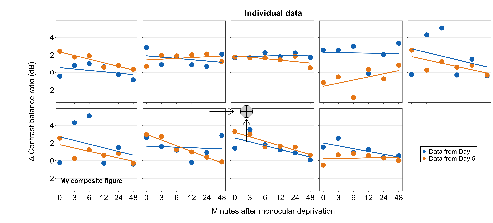
7.5.5 Rectangle annotations
Here, we will add rectangle annotations using sm_add_rect(). The four coordinate arguments are xmin, xmax, ymin and yend. These arguments are exactly the same as annotate('rect', ...). fill determines the filling color, and color determines the border color. The border’s width is set with the argument linewidth, which is set to 0.5 as default.
We draw a transparent rectangle over the crosshair to see if the coordinate system is uniform to those of the previously used annotation functions.
plots_tgd4h <- sm_add_rect(plots_tgd4g, xmin= 0.44, ymin = 0.37, xmax = 0.56,
ymax = 0.63, alpha = 0.25, fill = sm_color('red'), color='white')We see that the center of the coordinate is uniform but not at the end. Currently, there is no way to match both the ends and center because as far as I know there is no way to get common coordinates for different visual components at the level of composite figure. So, for now, users will have to just understand that the center of the annotations are aligned if same coordinates are used but not at necessarily at the ends.
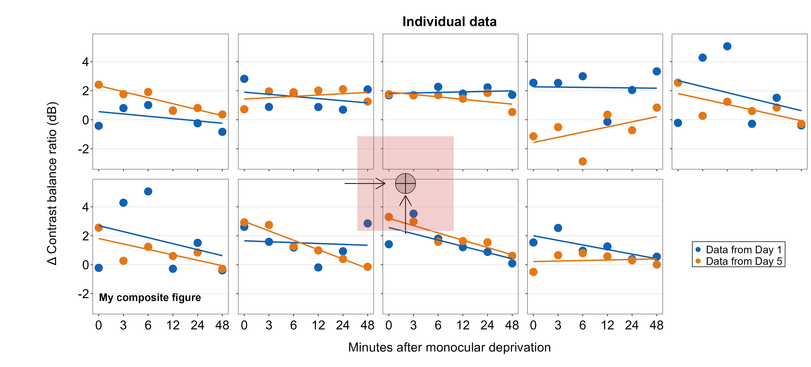
7.5.6 Polygon annotations
We will annotate a polygon onto the combined figure using sm_add_polygon(). Here, we will create a triangle. All coordinates should provided in x and y arguments. Triangles have three points, so x and y have three elements. The values should be from 0 to 1.
plots_tgd4i <- sm_add_polygon(plots_tgd4h, x = c(.2,.8,.8), y = c(.2,.8,.2),
alpha = 0.25, fill = sm_color('blue'), color='white')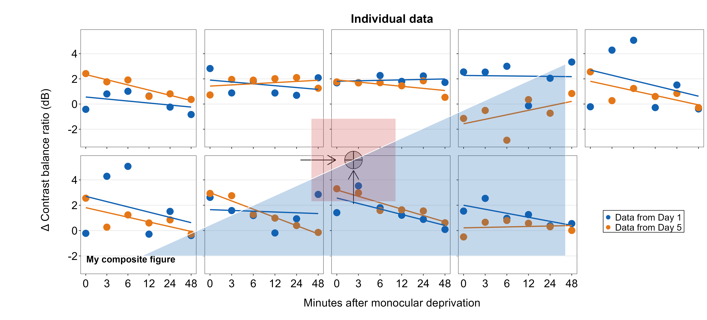
We will finish the annotations with this one.
plots_tgd4j <- sm_add_text(plots_tgd4i, x=.5, y=.5, label = 'Annotations!!', angle=42, size = 25, fontface='bold')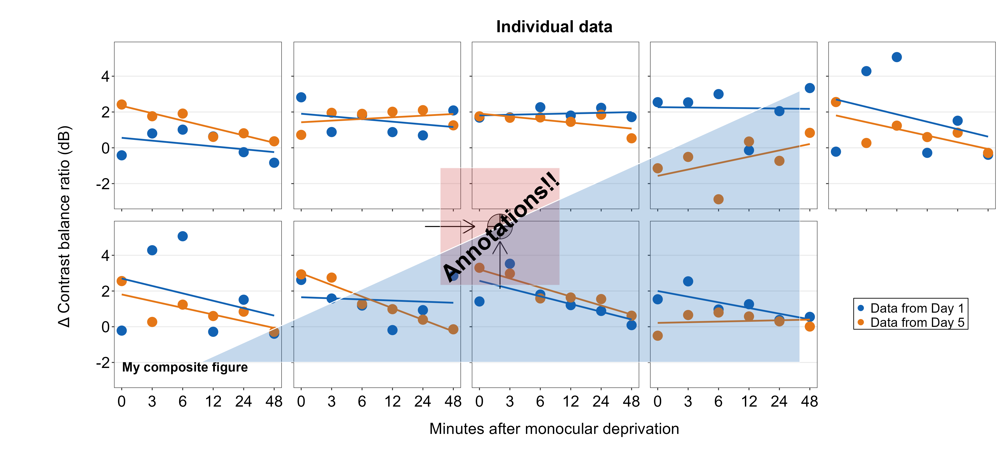